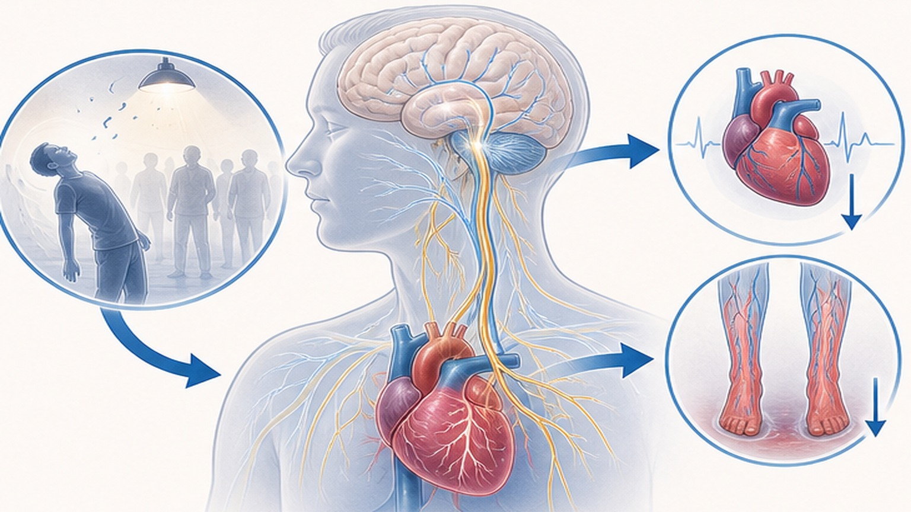
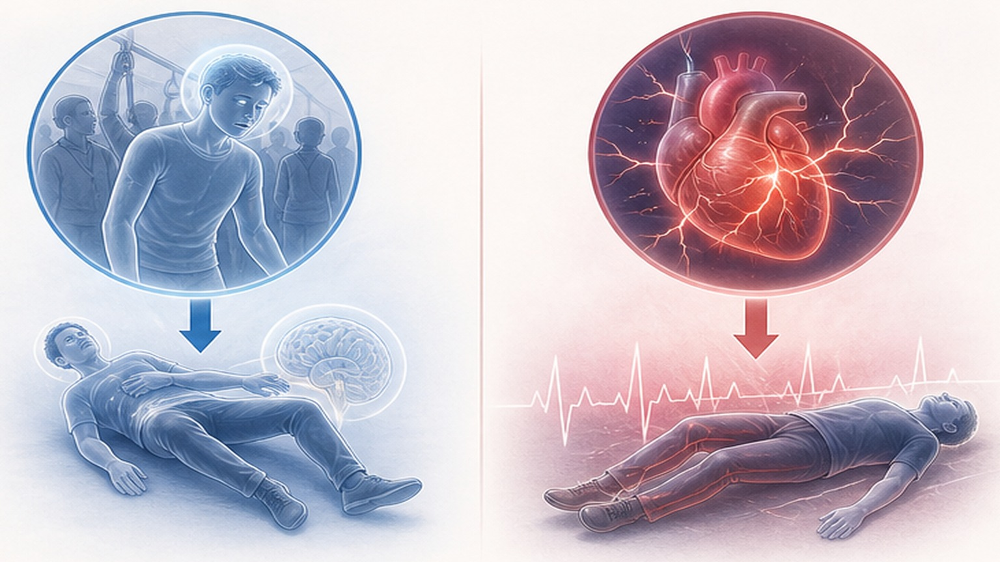
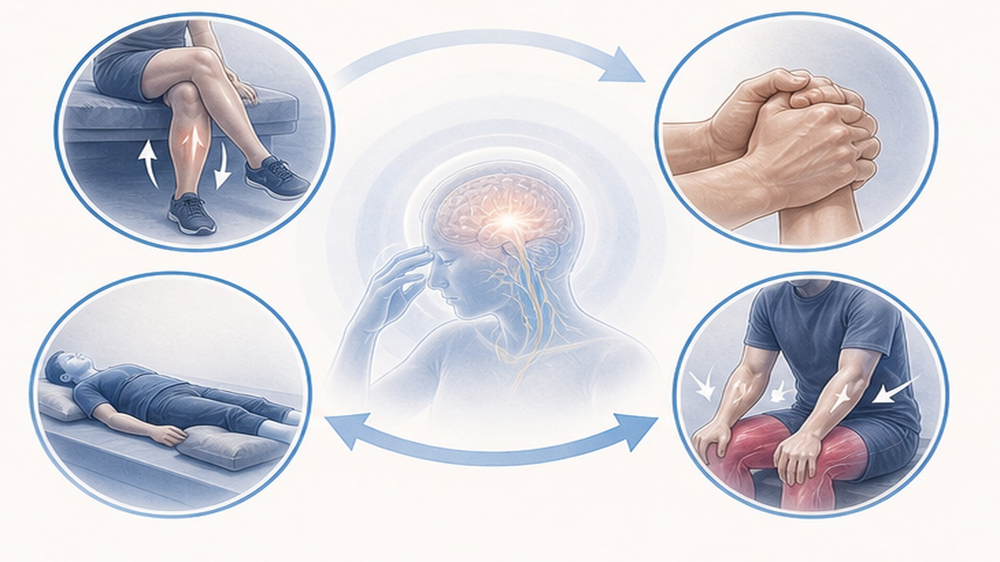
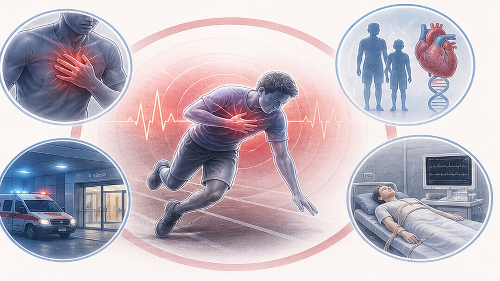

미주신경성 실신,
알면 예방하고 대처할 수 있습니다
자율신경이 과반응해 일시적으로 뇌혈류가 줄어드는 양성 실신 — 생명에 지장은 없습니다
실신 (Syncope) 이란
전반적 뇌혈류 감소로 인해 발생하는 일시적 의식 소실 — 평균 6~8초 내 회복
미주신경성 실신 (Vasovagal Syncope) 이란
자율신경 과반응으로 일시적 뇌혈류 부족이 일어나는 양성 실신
자율신경이 갑작스러운 자극에 과민하게 반응해 혈관이 확장되고 심장 박동이 느려지면서 일시적으로 뇌혈류가 줄어드는 상태입니다.
"심장에 심각한 병이 있어서가 아니라, 자율신경이 과민하게 반응해 일시적으로 뇌혈류가 부족해지는 상태"입니다. 생명에 지장은 없으나 안전사고 예방이 필요합니다. 단, 위험한 심장성 실신과의 감별은 반드시 수반되어야 합니다.
왜 생기나요? — 자율신경의 과민 반응
두 기전이 단독 또는 함께 작동해 뇌혈류 부족을 일으킵니다

이런 상황에서 잘 생깁니다
유발 상황을 알아두면 미리 알아 실신을 예방할 수 있습니다
미주신경성 실신 vs 심장성 실신 구별 포인트
전조 증상·유발 상황·자세 등으로 위험도를 가늠할 수 있습니다
- 전조 증상 있음 — 어지러움·식은땀·시야 흐림
- 오래 서 있기·통증·감정·더위 등 명확한 유발 요인
- 서 있거나 앉은 자세에서 발생
- 의식 소실 시간 짧음 (수 초~수 분)
- 눕히면 빠르게 회복, 후유증 없음
- 젊은 성인·여성에서 흔함
- 전조 증상 없이 갑작스러운 의식 소실
- 운동 중·운동 직후 발생
- 누운 자세에서도 발생
- 흉통·두근거림·호흡곤란 동반 가능
- 심장 질환이나 돌연사 가족력
- 회복 후에도 무력감·혼동 지속 가능

전조 증상이 오면 즉시 이렇게! (PCM)
근육 반동 수기 (Physical Counter-Pressure Maneuver) — 들어두면 실신을 예방할 수 있습니다

매일 매일 실천 보세요 — 5가지 일상 습관
예방의 핵심은 충분한 수분과 적절한 염분, 그리고 자세 습관
이런 실신은 위험합니다 (Red Flags)
미주신경성 실신과 다르게, 반드시 심장 정밀 검사가 필요한 경고 신호

어떤 검사를 받나요? — 단계적 접근
대부분 1차 검사만으로 충분히 진단 가능 — 위험 신호가 있을 때만 2차 검사
오늘 꼭 기억할 핵심 8가지
미주신경성 실신은 안전하지만, 알아두면 예방하고 위험 신호를 구별할 수 있습니다
알면 예방하고
안심하며 대처할 수 있습니다
실신이 반복되거나 위험 신호가 있다면 언제든 문의해 주세요 — 함께 검토하겠습니다
광교중앙로 298, 4층
토요일 08:30~13:30
같은 자료를 다시 볼 수 있어요